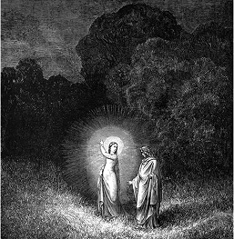
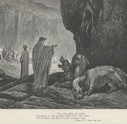

Dante y Virgilio

Beatriz guiando a Virgilio

Cerbero, el guardián del Infierno
La Divina Comedia
¿Qué es la Divina Comedia?
La Divina Comedia es un poema épico escrito por Dante Alighieri en el siglo XIV.
Narra el viaje simbólico de un alma a través del Infierno, el Purgatorio y el Paraíso, explorando el sentido moral, espiritual y político de la vida humana.
Aunque su trama sigue un recorrido ficticio, su objetivo es reflexionar sobre la justicia divina, las consecuencias de las acciones y la búsqueda de la redención.
Tiene diversos personajes históricos y mitológicos, como Virgilio y Beatriz, quienes guían a Dante en su travesía o Cleopatra, Judas, etc. quienes se encuentran en
diversos lugares a consecuencia de los actos realizados en su vida.
¿Porqué es releveante?
Su relevancia radica en que no solo es una obra maestra de la literatura italiana y universal, sino que también consolidó el uso del idioma italiano.
en la escritura culta, mezclando filosofía, religión y política en un mismo texto.
Además, influyó profundamente en la cultura occidental, inspirando arte, literatura y pensamiento durante siglos, y
sigue siendo una referencia para reflexionar sobre valores éticos y la condición humana.
A inicios del siglo 17, la gente comenzó a discutir sobre que language debían hablar y que formas usar.
Italia se convirtió en una nación unificada en 1861, un idioma nacional debía ser escogido. La elección se hizo: el lenguaje usado por Dante, el gran poeta, ganó.
La dificultad de sustituir los dialectos italianos con el italiano estándar.Sin embargo, tanto en áreas rurales como en las clases trabajadoras y media que vivían en las
áreas urbanas, se utilizaban principalmente dialectos regionales y esta tendencia continuaría por varias décadas.
Después de la Seguna Guerra Mundial, la mayoría de la población en Italia aun utilizaba dialectos como su idioma para la comunicación social diaria.
Especialmente en la clase baja de la población, donde el nivel de educación faltaba y había una alta tasa de analfabetis. El tener una buena educación era considerado un privilegio que era reservado para muy pocos, principalmente los hijos de la clase media y alta
eran quienes asistían a la escuela secundaria y especialmente la universid. La uniformidad de Italia comienza en 1960.
El uso del italiano estándar (el que la mayoría de los italianos habla hoy) se ha esparcido durante los últimos setenta años gracias al incremento del acceso a las escuelas y gracias a la televisión, la cual, especialmente en los sesentas,
propuso un criterio uniforme de sintaxis y pronunciación, y la creación de programas educativos útiles, los cuales incluían cursos de alfabetismo para adultos.
Así que, ¿qué podemos concluir de todo es. Básicamente, a través de un proceso evolutivo largo y complejo que duró más de seis siglos, el idioma florentino (hablado y escrito por Dante) fue (y sigue siendo) la base del idioma italiano que todos desean aprender a hablar:
¿cómo no podría ser importante?
Esto es solo otra razón para estudiar italiano, así como otra razón para decidir estudiar italiano en Florencia.
Dante Alighieri
Dante Alighieri (1265 – 1321) fue un poeta, escritor y pensador florentino, considerado el “padre” de la lengua italiana. Nació en Florencia en una familia de pequeña nobleza y vivió en una época de intensos conflictos políticos entre güelfos y gibelinos,
lo que marcó su vida y obra. Participó activamente en la política, pero en 1302 fue condenado al exilio por sus enemigos,
sin poder volver jamás a su ciudad natal.
Durante su destierro escribió su obra más famosa,
La Divina Comedia, un poema épico que narra un viaje imaginario por el Infierno, el Purgatorio y el Paraíso, mezclando filosofía, teología y política.
Esta obra no solo consolidó el italiano como lengua literaria, sino que también influyó en la literatura mundial.
Murió en Rávena en 1321, probablemente a causa de malaria, dejando un legado que aún hoy lo coloca entre los escritores más importantes de la historia.